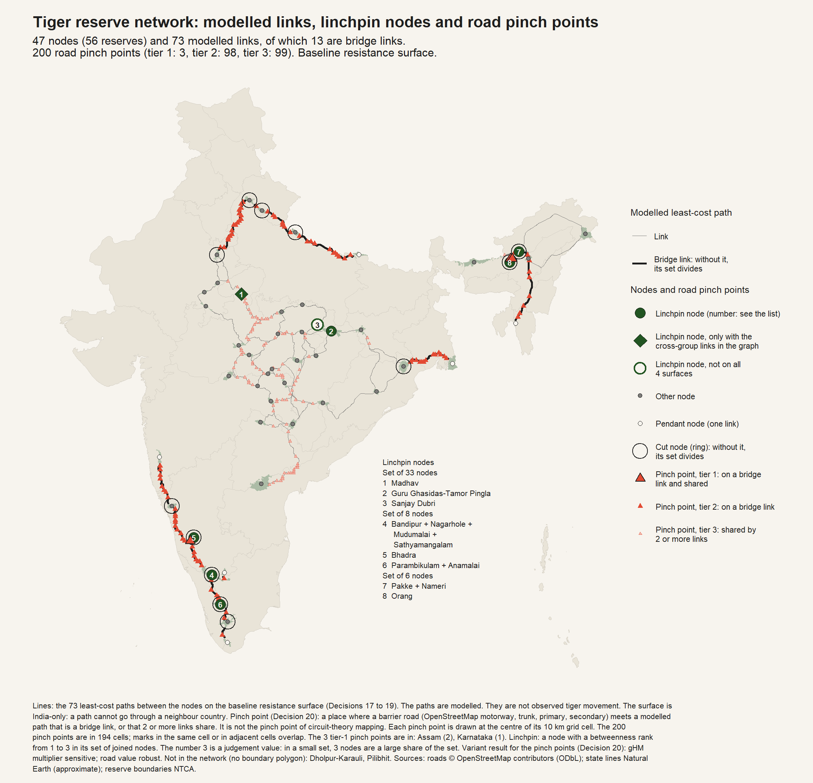

Connectivity
Placeholder — the author’s text (Week 20).
fig_03_reserve_network

tbl_03_reserve_network
| unit_name | state | node_name | set_id | set_size | degree | betweenness_norm | linchpin | stable_linchpin | cut_node | pendant | n_pinch_points |
|---|---|---|---|---|---|---|---|---|---|---|---|
| Nagarjunsagar-Srisailam | Andhra Pradesh | Nagarjunsagar-Srisailam + Amrabad | 1 | 33 | 2 | 0 | FALSE | FALSE | FALSE | FALSE | 21 |
| Namdapha | Arunachal Pradesh | Namdapha + Kamlang | 3 | 6 | 2 | 0 | FALSE | FALSE | FALSE | FALSE | 0 |
| Pakke | Arunachal Pradesh | Pakke + Nameri | 3 | 6 | 4 | 0.6 | TRUE | TRUE | TRUE | FALSE | 3 |
| Kamlang | Arunachal Pradesh | Namdapha + Kamlang | 3 | 6 | 2 | 0 | FALSE | FALSE | FALSE | FALSE | 0 |
| Manas | Assam | Manas + Buxa | 3 | 6 | 2 | 0 | FALSE | FALSE | FALSE | FALSE | 3 |
| Nameri | Assam | Pakke + Nameri | 3 | 6 | 4 | 0.6 | TRUE | TRUE | TRUE | FALSE | 3 |
| Kaziranga | Assam | Kaziranga | 3 | 6 | 2 | 0 | FALSE | FALSE | FALSE | FALSE | 0 |
| Orang | Assam | Orang | 3 | 6 | 3 | 0.4 | TRUE | TRUE | TRUE | FALSE | 12 |
| Valmiki | Bihar | Valmiki | 1 | 33 | 1 | 0 | FALSE | FALSE | FALSE | TRUE | 11 |
| Indravati | Chhattisgarh | Indravati | 1 | 33 | 5 | 0.129 | FALSE | FALSE | FALSE | FALSE | 26 |
| Udanti-Sitanadi | Chhattisgarh | Udanti-Sitanadi | 1 | 33 | 5 | 0.0444 | FALSE | FALSE | FALSE | FALSE | 10 |
| Achanakmar | Chhattisgarh | Achanakmar | 1 | 33 | 4 | 0.167 | FALSE | FALSE | FALSE | FALSE | 10 |
| Guru Ghasidas-Tamor Pingla | Chhattisgarh | Guru Ghasidas-Tamor Pingla | 1 | 33 | 4 | 0.292 | TRUE | TRUE | FALSE | FALSE | 1 |
| Palamau | Jharkhand | Palamau | 1 | 33 | 3 | 0.125 | FALSE | FALSE | FALSE | FALSE | 2 |
| Bandipur | Karnataka | Bandipur + Nagarhole + Mudumalai + Sathyamangalam | 2 | 8 | 3 | 0.714 | TRUE | TRUE | TRUE | FALSE | 15 |
| Bhadra | Karnataka | Bhadra | 2 | 8 | 2 | 0.476 | TRUE | TRUE | TRUE | FALSE | 18 |
| Kali | Karnataka | Kali | 2 | 8 | 2 | 0.286 | FALSE | FALSE | TRUE | FALSE | 19 |
| Nagarhole | Karnataka | Bandipur + Nagarhole + Mudumalai + Sathyamangalam | 2 | 8 | 3 | 0.714 | TRUE | TRUE | TRUE | FALSE | 15 |
| Biligiri Ranganatha Temple | Karnataka | Biligiri Ranganatha Temple | 2 | 8 | 1 | 0 | FALSE | FALSE | FALSE | TRUE | 1 |
| Periyar | Kerala | Periyar + Srivilliputhur-Megamalai | 2 | 8 | 2 | 0.286 | FALSE | FALSE | TRUE | FALSE | 3 |
| Parambikulam | Kerala | Parambikulam + Anamalai | 2 | 8 | 2 | 0.476 | TRUE | TRUE | TRUE | FALSE | 8 |
| Kanha | Madhya Pradesh | Kanha | 1 | 33 | 6 | 0.2 | FALSE | FALSE | FALSE | FALSE | 19 |
| Pench | Madhya Pradesh | Pench | 1 | 33 | 4 | 0.0786 | FALSE | FALSE | FALSE | FALSE | 16 |
| Bandhavgarh | Madhya Pradesh | Bandhavgarh | 1 | 33 | 5 | 0.0222 | FALSE | FALSE | FALSE | FALSE | 7 |
| Panna | Madhya Pradesh | Panna | 1 | 33 | 4 | 0.202 | FALSE | FALSE | FALSE | FALSE | 23 |
| Satpura | Madhya Pradesh | Satpura | 1 | 33 | 5 | 0.173 | FALSE | FALSE | FALSE | FALSE | 19 |
| Sanjay Dubri | Madhya Pradesh | Sanjay Dubri | 1 | 33 | 3 | 0.252 | TRUE | FALSE | FALSE | FALSE | 1 |
| Veerangana Durgavati | Madhya Pradesh | Veerangana Durgavati | 1 | 33 | 6 | 0.0121 | FALSE | FALSE | FALSE | FALSE | 14 |
| Ratapani | Madhya Pradesh | Ratapani | 1 | 33 | 6 | 0.216 | FALSE | FALSE | FALSE | FALSE | 29 |
| Madhav | Madhya Pradesh | Madhav | 1 | 33 | 4 | 0.357 | TRUE | TRUE | FALSE | FALSE | 24 |
| Melghat | Maharashtra | Melghat | 1 | 33 | 3 | 0.0464 | FALSE | FALSE | FALSE | FALSE | 11 |
| Tadoba-Andhari | Maharashtra | Tadoba-Andhari | 1 | 33 | 5 | 0.0121 | FALSE | FALSE | FALSE | FALSE | 14 |
| Pench (MH) | Maharashtra | Pench (MH) | 1 | 33 | 5 | 0.214 | FALSE | FALSE | FALSE | FALSE | 19 |
| Sahyadri | Maharashtra | Sahyadri | 2 | 8 | 1 | 0 | FALSE | FALSE | FALSE | TRUE | 8 |
| Nawegaon-Nagzira | Maharashtra | Nawegaon-Nagzira | 1 | 33 | 6 | 0.184 | FALSE | FALSE | FALSE | FALSE | 16 |
| Bor | Maharashtra | Bor | 1 | 33 | 4 | 0.0242 | FALSE | FALSE | FALSE | FALSE | 8 |
| Dampa | Mizoram | Dampa | 3 | 6 | 1 | 0 | FALSE | FALSE | FALSE | TRUE | 11 |
| Similipal | Odisha | Similipal | 1 | 33 | 3 | 0.0625 | FALSE | FALSE | TRUE | FALSE | 16 |
| Satkosia | Odisha | Satkosia | 1 | 33 | 3 | 0.0242 | FALSE | FALSE | FALSE | FALSE | 2 |
| Ranthambore | Rajasthan | Ranthambore | 1 | 33 | 3 | 0.0907 | FALSE | FALSE | FALSE | FALSE | 2 |
| Sariska | Rajasthan | Sariska | 1 | 33 | 3 | 0.226 | FALSE | FALSE | TRUE | FALSE | 23 |
| Mukundara Hills | Rajasthan | Mukundara Hills | 1 | 33 | 2 | 0 | FALSE | FALSE | FALSE | FALSE | 0 |
| Ramgarh Vishdhari | Rajasthan | Ramgarh Vishdhari | 1 | 33 | 2 | 0.0323 | FALSE | FALSE | FALSE | FALSE | 0 |
| Kalakad-Mundanthurai | Tamil Nadu | Kalakad-Mundanthurai | 2 | 8 | 1 | 0 | FALSE | FALSE | FALSE | TRUE | 1 |
| Anamalai | Tamil Nadu | Parambikulam + Anamalai | 2 | 8 | 2 | 0.476 | TRUE | TRUE | TRUE | FALSE | 8 |
| Mudumalai | Tamil Nadu | Bandipur + Nagarhole + Mudumalai + Sathyamangalam | 2 | 8 | 3 | 0.714 | TRUE | TRUE | TRUE | FALSE | 15 |
| Sathyamangalam | Tamil Nadu | Bandipur + Nagarhole + Mudumalai + Sathyamangalam | 2 | 8 | 3 | 0.714 | TRUE | TRUE | TRUE | FALSE | 15 |
| Srivilliputhur-Megamalai | Tamil Nadu | Periyar + Srivilliputhur-Megamalai | 2 | 8 | 2 | 0.286 | FALSE | FALSE | TRUE | FALSE | 3 |
| Kawal | Telangana | Kawal | 1 | 33 | 3 | 0 | FALSE | FALSE | FALSE | FALSE | 24 |
| Amrabad | Telangana | Nagarjunsagar-Srisailam + Amrabad | 1 | 33 | 2 | 0 | FALSE | FALSE | FALSE | FALSE | 21 |
| Dudhwa | Uttar Pradesh | Dudhwa | 1 | 33 | 2 | 0.0625 | FALSE | FALSE | TRUE | FALSE | 18 |
| Ranipur | Uttar Pradesh | Ranipur | 1 | 33 | 2 | 0.21 | FALSE | FALSE | FALSE | FALSE | 0 |
| Corbett | Uttarakhand | Corbett | 1 | 33 | 2 | 0.121 | FALSE | FALSE | TRUE | FALSE | 8 |
| Rajaji | Uttarakhand | Rajaji | 1 | 33 | 2 | 0.175 | FALSE | FALSE | TRUE | FALSE | 22 |
| Sundarbans | West Bengal | Sundarbans | 1 | 33 | 1 | 0 | FALSE | FALSE | FALSE | TRUE | 14 |
| Buxa | West Bengal | Manas + Buxa | 3 | 6 | 2 | 0 | FALSE | FALSE | FALSE | FALSE | 3 |
Rows: 56. Columns shown: 12 of 27. Full table: tbl_03_reserve_network.csv.
tbl_03_notes
Notes for tbl_03_reserve_network.csv and tbl_03b_pinch_points.csv
Written by scripts/07_connectivity.R STEP 12.6. The script writes this file again on each run: do not edit it by hand. The field list is in docs/data-dictionary.md. The rules are in docs/methodology.md, Decisions 19 and 20.
What a “pinch point” is in these tables
- A place where a barrier road meets a modelled least-cost path between two tiger reserves, at a site that a bridge link uses or that 2 or more links share.
- It is NOT the pinch point of circuit-theory mapping (a narrow part of a corridor with high current flow). A least-cost path has no width.
- Barrier road: an OpenStreetMap road of class motorway, trunk, primary, secondary. The road class is a description. It is not a traffic volume and it is not in the rule.
- Site: road crossings at most 5 km apart are one site. One row of tbl_03b is one site.
- Bridge link: a link of the reserve network without which its set of joined nodes divides.
Tiers
- Tier 1: the site is on a bridge link and it is shared.
- Tier 2: the site is on a bridge link only.
- Tier 3: 2 or more links share the site; no bridge link uses it.
- The sites in one tier have no order between them.
Limits
- The paths and the road crossings are modelled. They are not observed tiger movement, and they are not records of tigers on roads.
- The resistance surface is India-only: a path cannot go through a neighbour country.
- Position: each pinch point is given as a 10 km grid cell with its state and district, and not more precisely (docs/sensitive-data-policy.md, section 3). The districts are those of the 2011 census.
- Variant result for the pinch points (Decision 20 point 6): gHM multiplier sensitive; road value robust. In tbl_03b, n_variants_near is the number of variant surfaces (0 to 3) that have a pinch point within 5 km of the site.
- Linchpin (tbl_03): a node with a betweenness rank from 1 to 3 in its set of joined nodes. The number 3 is a judgement value: read the label with set_size.
- Node counts (tbl_03): the values are per node, and the reserves of one node share them. A site on a link counts for the two nodes of the link, so the node counts do not add up to the number of pinch points. The count gives no order of nodes.
Counts of this run
- tbl_03: 56 reserves in 47 nodes.
- tbl_03b: 200 pinch points (tier 1: 3, tier 2: 98, tier 3: 99).
Long tables (links)
tbl_03b_pinch_points.csv— 200 rows